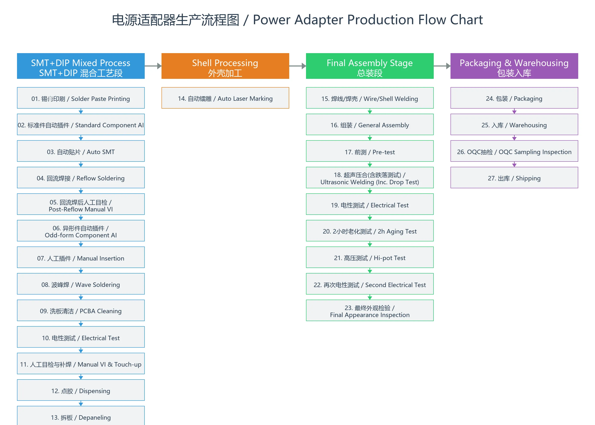

中国深圳，2026年7月28日 —— 一台电源适配器从原材料到交付，需要经历多少道工序、多少次检验？作为一家拥有18年制造经验、ISO9001认证、月产能达90万台的电源适配器专业制造商，深圳市华亿腾科技开发有限公司将品质管控贯穿于生产的每一个环节。
今天，我们从B端合作伙伴最关心的三个问题出发，带您走进华亿腾的生产线：制程能力、品质管控、全球合规。
一、制程能力：SMT+DIP混合工艺，全链条自主生产
华亿腾拥有完整的电源适配器自主生产能力，采用 SMT与DIP混合工艺，实现从贴片、插件到总装测试的全流程自主控制。
SMT+DIP混合工艺（锡膏面与插件面协同生产）
以下12个步骤代表了完整的PCB组装流程——从裸板到功能完整的电源板：
- 锡膏/红胶印刷 — 在全自动印刷机上精确印刷锡膏或红胶（根据工艺需求选择）。
- 标准件自动插件 — 自动插件设备将电解电容、电阻、Y电容等标准元器件精准插入PCB对应孔位。
- 自动贴片 — 多台高精度贴片机将贴片电容、贴片电阻等SMD元器件贴装在PCB上。
- 回流焊接 — 贴装完成的PCB经过回流焊炉，使锡膏或红胶固化，将贴片元器件牢固焊接或粘合在PCB上。
- 异形件自动插件 — 异形插件设备专门处理弹片、变压器等异形元件的自动插入。
- 人工插件 — 经验丰富的技术工人手工插入散热片、AC输入线、USB母座、共模电感等不规则零件。
- 波峰焊 — 插件完成后经全自动波峰焊一次焊接成型，此时PCB已全面上锡，焊点牢固。
- 洗板清洁 — 去除助焊剂残留，确保板面洁净。
- 电性测试 — 此时PCB已具备完整电气性能，进行在线电气参数检测。
- 人工目检与补焊 — 由熟练工人对焊锡缺陷进行目检和手动修补。
- 点胶 — 对大型元件进行点胶加固，增强抗振性能。
- 拆板 — 将焊接完成的PCB从工艺边或拼板上分离。
外壳加工
采用多台自动镭雕机，在外壳上精准雕刻产品型号、电气参数、认证标志及客户Logo，确保标识清晰耐磨、永久可追溯。
二、品质管控：五重检验，确保每一台都可靠
品质是B端客户最关心的问题。华亿腾建立了覆盖生产全流程的 五重品质管控体系：
-
第一重：回流焊后人工目检。
每一片PCB经过回流焊后，由专职质检人员逐一目检，杜绝少件、元件歪斜等贴片缺陷。 -
第二重：DIP后人工目检与补焊。
波峰焊、洗板、电性测试完成后，熟练工人对每一片PCB进行人工目检，发现焊锡缺陷立即修补，确保焊接质量。 -
第三重：四道电性安全测试（总装后）。
依次通过 前测、电性测试、高压绝缘测试、再次电性测试 四道关卡，验证电压、电流、绝缘耐压等关键参数。 -
第四重：2小时老化测试。
在高温满载条件下，对每台产品进行持续2小时老化，提前剔除潜在的早期失效产品。 -
第五重：最终外观检验与OQC出货抽检。
质检人员逐台检查外观，确保无划痕、无缝隙、标签准确。成品包装入库后，OQC对已包装产品进行随机抽样检验，抽检合格方可出库。
✅ 每一台电源适配器在出厂前，都必须100%通过上述全部检验。
这是华亿腾对“零缺陷”承诺的坚守。
三、全球认证：20+安规认证，通行全球市场
B端客户开拓全球市场，认证是关键门槛。华亿腾产品持有 CE、ETL、FCC、GS、CB、UKCA、RCM、SAA、KC、PSE、ICES、DOE、CEC、EPR、NrCan 等20余项国际认证，覆盖北美、欧洲、亚洲、澳洲等主要市场，助您实现无缝清关、快速上市。
| 市场 | 认证 | 对您的意义 |
|---|---|---|
| 北美 | ETL / cETL、FCC、ICES、DOE、CEC、NRCan | 满足美加两国安全与能效要求，清关无阻 |
| 欧洲 | CE-LVD、CE-EMC、GS、CB、UKCA、RoHS、ErP | 符合欧盟及英国最新法规，覆盖EEA全境 |
| 亚洲 | CCC、PSE、KC | 中国、日本、韩国——三大经济体全面覆盖 |
| 澳洲 | RCM、SAA | 覆盖澳大利亚与新西兰市场 |
| 质量体系 | ISO9001:2015 | 认证的质量管理体系——一致性值得信赖 |
这些认证已为您前置完成，您无需为不同市场重复投入认证成本和时间。只需提供您的规格要求，我们即可交付适配目标市场的产品。
四、灵活定制：OEM/ODM全面配合
从电压、电流、外壳、线材、连接器，到插头类型、标签设计、包装方案——华亿腾提供全方位的OEM/ODM定制服务，全面满足您的品牌需求。无论订单量大小，我们均能灵活响应。
定制电气规格
电压、电流、功率按需调整
插头与连接器选项
美/欧/英/澳规插头 + 定制线材和连接器
品牌与包装
定制标签、Logo及包装设计
快速交付
样品1-5天，灵活批量生产
附：华亿腾电源适配器生产流程图
① SMT+DIP混合工艺段
锡膏/红胶印刷 → 标准件自动插件（电解电容/电阻/Y电容）→ 自动贴片（贴片电容/电阻等）→ 回流焊接 → 回流焊后人工目检 → 异形件自动插件（弹片/变压器）→ 人工插件（散热片/AC线/USB母座/共模电感）→ 波峰焊 → 洗板清洁 → 电性测试 → 人工目检与补焊 → 点胶 → 拆板
② 外壳加工
自动镭雕（型号/参数/认证标志/Logo）
③ 总装段
（焊线/焊壳，按需）→ 组装 → 前测 → 超声压合（含每小时跌落测试）→ 电性测试 → 2小时老化测试 → 高压测试 → 再次电性测试 → 最终外观检验
④ 包装入库
包装 → 入库 → OQC抽检 → 出库
一台华亿腾电源适配器的诞生，历经 4大制程、5重检验、100%老化、20+项全球认证。
品质不是口号，而是贯穿每一道工序的执行标准。